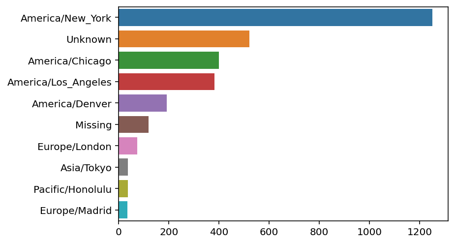
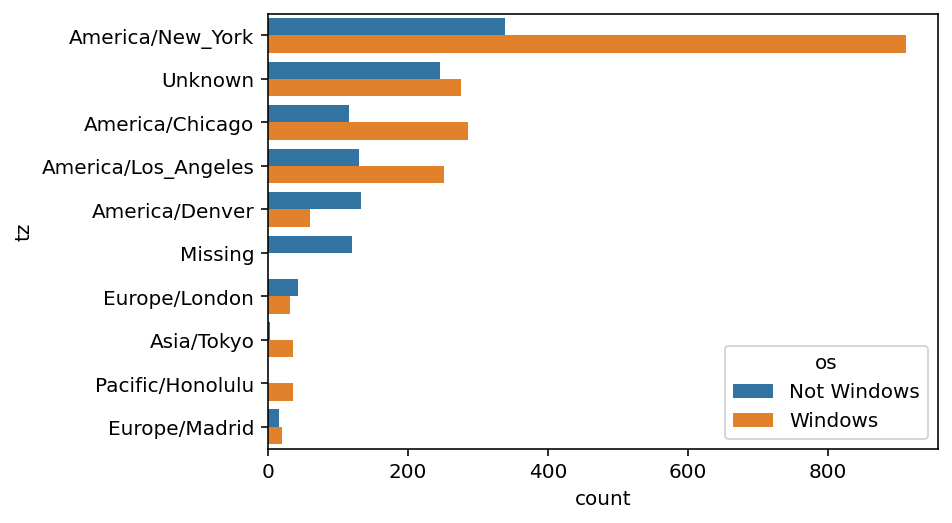
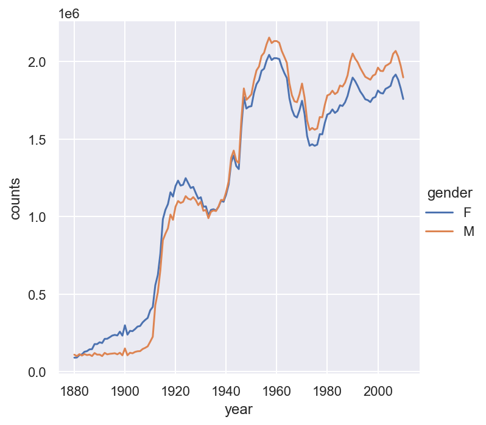
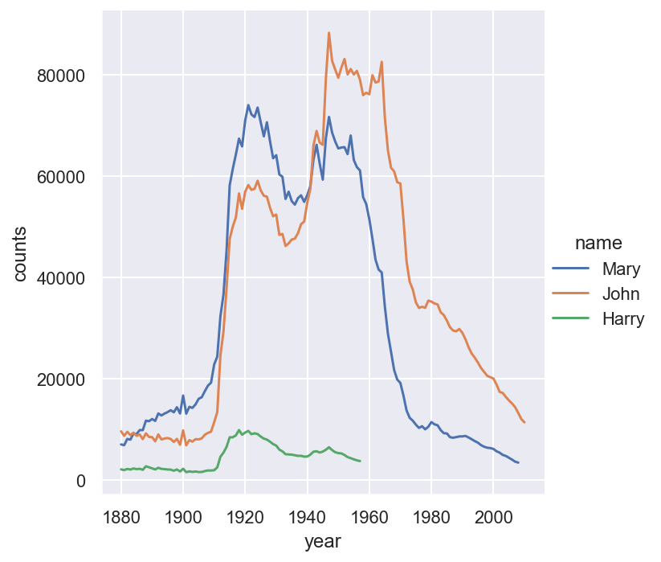
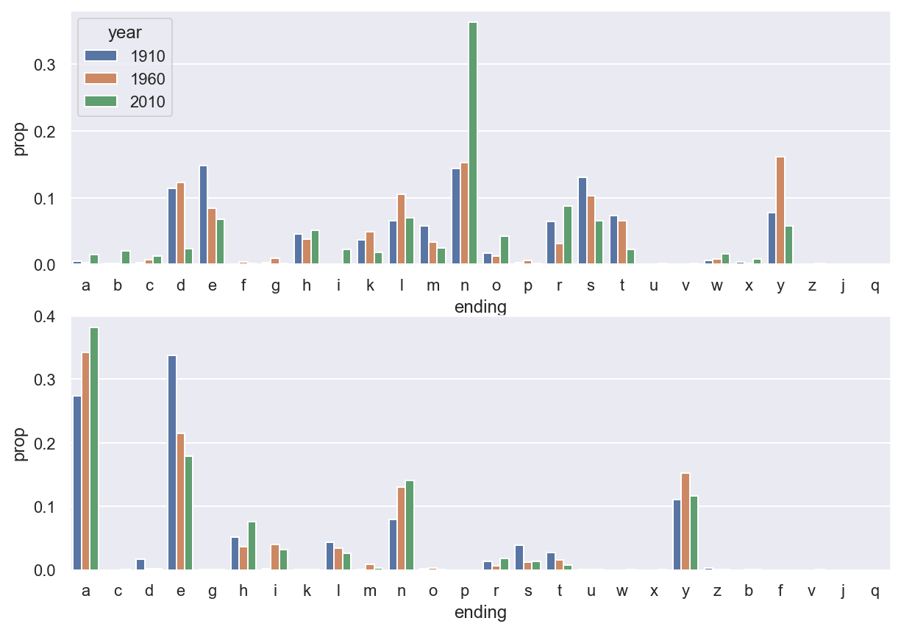
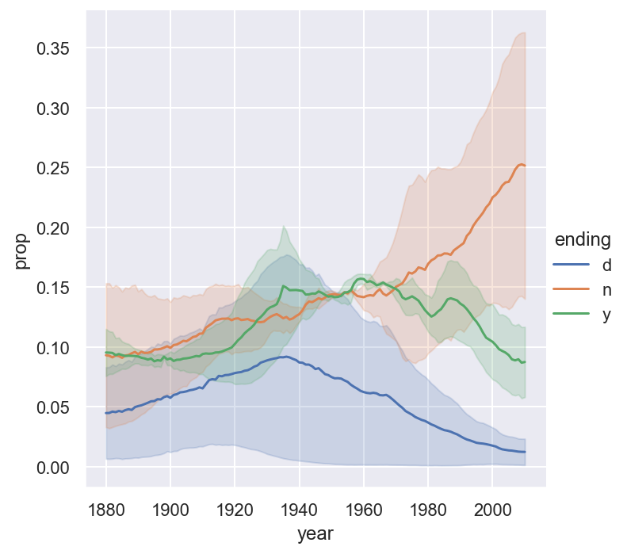

import pandas as pd
import numpy as np
import json
path = 'assests/datasets/example.txt'
df = pd.DataFrame([json.loads(line) for line in open(path)])6 Projects with Python
6.1 Example 1: USA.gov Data From Bitly
In 2011, URL shortening service Bitly partnered with the US government website USA.gov to provide a feed of anonymous data gathered from users who shorten links ending with .gov or .mil. The data is gotten from [1].
The data file can be downloaded from here. The file is mostly in JSON. It can be converted into a DataFrame by the following code.
We mainly use tz and a columns. So let us clean it.
df['tz'] = df['tz'].fillna('Missing')
df['tz'][df['tz'] == ''] = 'Unknown'
df['a'] = df['a'].fillna('Missing')
df['a'][df['a'] == ''] = 'Unknown'We first want to extract the timezone infomation from it. The timezone info is in the column tz.
tzone = df['tz']
tvc = tzone.value_counts()
tvcAmerica/New_York 1251
Unknown 521
America/Chicago 400
America/Los_Angeles 382
America/Denver 191
...
Europe/Uzhgorod 1
Australia/Queensland 1
Europe/Sofia 1
America/Costa_Rica 1
America/Tegucigalpa 1
Name: tz, Length: 98, dtype: int64After cleaning data, we would like to visulize the value counts.
import seaborn as sns
sns.barplot(x=tvc[:10].values, y=tvc[:10].index)<AxesSubplot:>
We then would like to extract information from the column a. This column is about the agent of the connection. The important info is the part before the space ' '.
agent = df['a']
agent = agent.str.split(' ').str[0]
avc = agent.value_counts()
avc[:10]Mozilla/5.0 2594
Mozilla/4.0 601
GoogleMaps/RochesterNY 121
Missing 120
Opera/9.80 34
TEST_INTERNET_AGENT 24
GoogleProducer 21
Mozilla/6.0 5
BlackBerry8520/5.0.0.681 4
BlackBerry8520/5.0.0.592 3
Name: a, dtype: int64Now let us assume that, if Windows appears in column a the user is using Windows os, if not then not. In this case, the os can be detected by the following code.
df['os'] = np.where(df['a'].str.contains('Windows'), 'Windows', 'Not Windows')Now we can make a bar plot about the counts based on os and timezone.
tz_os_counts = df.groupby(['tz', 'os']).size().unstack().fillna(0)
tz_os_counts.head()| os | Not Windows | Windows |
|---|---|---|
| tz | ||
| Africa/Cairo | 0.0 | 3.0 |
| Africa/Casablanca | 0.0 | 1.0 |
| Africa/Ceuta | 0.0 | 2.0 |
| Africa/Johannesburg | 0.0 | 1.0 |
| Africa/Lusaka | 0.0 | 1.0 |
We then turn it into a DataFrame using the .stack(), .unstack() tricks.
tovc = tz_os_counts.stack()[tz_os_counts.sum(axis=1).nlargest(10).index]
tovc.name = 'count'
dftovc = pd.DataFrame(tovc).reset_index()Finally we may draw the bar plot.
sns.barplot(x='count', y='tz', hue='os', data=dftovc)<AxesSubplot:xlabel='count', ylabel='tz'>
6.2 Example 2: US Baby Names 1880–2010
The United States Social Security Administration (SSA) has made available data on the frequency of baby names from 1880 through the present. Hadley Wickham, an author of several popular R packages, has often made use of this dataset in illustrating data manipulation in R. The dataset can be downloaded from here as a zip file. Please unzip it and put it in your working folder.
In the folder there are 131 .txt files. The naming scheme is yob + the year. Each file contains 3 columns: name, gender, and counts. We would like to add a column year, and combine all files into a single DataFrame. In our example, the year is from 1880 to 2010.
import pandas as pd
path = 'assests/datasets/babynames/'
dflist = list()
for year in range(1880, 2011):
filename = path + 'yob' + str(year) + '.txt'
df = pd.read_csv(filename, names=['name', 'gender', 'counts'])
df['year'] = year
dflist.append(df)
df = pd.concat(dflist, ignore_index=True)We can plot the total births by sex and year.
import seaborn as sns
sns.relplot(data=df.groupby(['gender', 'year']).sum().reset_index(),
x='year', y='counts', hue='gender', kind='line')<seaborn.axisgrid.FacetGrid at 0x2385e8844f0>
For further analysis, we would like to compute the proportions of each name relative to the total number of births per year per gender.
def add_prop(group):
group['prop'] = group.counts / group.counts.sum()
return group
df = df.groupby(['gender', 'year']).apply(add_prop)
df.head()| name | gender | counts | year | prop | |
|---|---|---|---|---|---|
| 0 | Mary | F | 7065 | 1880 | 0.077643 |
| 1 | Anna | F | 2604 | 1880 | 0.028618 |
| 2 | Emma | F | 2003 | 1880 | 0.022013 |
| 3 | Elizabeth | F | 1939 | 1880 | 0.021309 |
| 4 | Minnie | F | 1746 | 1880 | 0.019188 |
Now we would like to keep the first 100 names in each year, and save it as a new DataFrame top100.
top100 = (
df.groupby(['year', 'gender'])
.apply(lambda x: df.loc[x['counts'].nlargest(100).index])
.drop(columns=['year', 'gender'])
.reset_index()
.drop(columns='level_2')
)
top100.head()| year | gender | name | counts | prop | |
|---|---|---|---|---|---|
| 0 | 1880 | F | Mary | 7065 | 0.077643 |
| 1 | 1880 | F | Anna | 2604 | 0.028618 |
| 2 | 1880 | F | Emma | 2003 | 0.022013 |
| 3 | 1880 | F | Elizabeth | 1939 | 0.021309 |
| 4 | 1880 | F | Minnie | 1746 | 0.019188 |
Note that level_2 is related to the original index after reset_index(). That’s why we don’t need it here.
Now we would like to draw the trend of some names.
namelist = ['John', 'Harry', 'Mary']
sns.relplot(data=top100[top100['name'].isin(namelist)],
x='year', y='counts', hue='name', kind='line')<seaborn.axisgrid.FacetGrid at 0x2385eeb14e0>
Now we would like to analyze the ending of names.
df['ending'] = df['name'].str[-1]
endingcount = df.groupby(['gender', 'year', 'ending']).sum().reset_index()We would like to draw barplots to show the distributions in year 1910, 1960 and 2010.
certainyear = endingcount[endingcount['year'].isin([1910, 1960, 2010])]
import matplotlib.pyplot as plt
fig, axs = plt.subplots(2, 1, figsize=(10,7))
sns.barplot(data=certainyear[endingcount['gender']=='M'],
x='ending', y='prop', hue='year', ax=axs[0])
sns.barplot(data=certainyear[endingcount['gender']=='F'],
x='ending', y='prop', hue='year', ax=axs[1]).legend_.remove()
We would also like to draw the line plot to show the trending of certain letters through years.
sns.relplot(data=endingcount[endingcount.ending.isin(['d', 'n', 'y'])],
x='year', y='prop', hue='ending', kind='line')<seaborn.axisgrid.FacetGrid at 0x2385ef87580>
6.3 Exercises
Exercise 6.1 Please use the baby name dataset. We would like to consider the diversity of the names. Please compute the number of popular names in top 50% for each year each gender. Draw a line plot to show the trend and discuss the result.